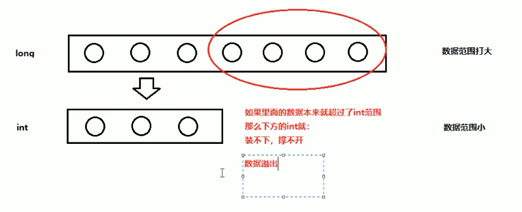

2019-10-17-19:36:43
标识符：
标识符:是指在程序中,自己定义的内容.如:类名、方法名、变量名等
命名规则（硬性要求）：
1.有英文字母（区分大小写）、数字、$（美元符）、_（下划线）组成
2.不能以数字开头
3.不能是关键字
命名规范（软性建议）：
1.类名：首字母大写，后面每个单词首字母大写（大驼峰）
2.变量名：首字母小写，后面每个单词首字母大写（小驼峰）
常量：
概述：是指在Java程序运行期间固定不变的数据
分类：
1.整数常量：所有整数，如：1、2、3、567等
2.小数常量：所有小数，如：1.2、2.3、2.33等
3.字符常量：单引号引起来的一个字符，必须要有内容，如'A'、'好'
4.字符串常量：双引号引起来的，可以多个字符，也可以不写，如："A"、"Hello"、"你好"
5.布尔常量：只有两个值，true和false
6.空常量：null
数据类型：
基本数据类型：包括整数、浮点数、字符、布尔
引用数据类型：包括类、数组、接口
基本数据类型：
1.字节型（byte）：1个字节（-128~127）
2.短整型（short）：2个字节（-32768~32767）
3.整型（int）：4个字节（-2^31~2^31-1）
4.长整型（long）：8个字节(-2^63~2^63-1)
5.单精度浮点数（float）：4个字节(1.4013E-45-3.4028E+38)
6.双精度浮点数（double）：8个字节(4.9E-324-1.7977E+308)
7.字符型（char）：2个字节(0~65535)
8.布尔类型（boolean）：1个字节(true、false)
注意：Java中的默认类型：整数类型：int、浮点类型：double
变量：
概述:常量是固定不变的数据，那么在程序中可以变化的量称为变量
格式：数据类型 变量名称 = 数据值;
变量注意事项：
1.如果创建多个变量，那么变量之间的名称不可以重复。
2.对于float和long类型来说，字母后綴F和L不要去掉。
3.如果使用byte或者short类型的变量，那么右侧的数据值不能超过左侧类型的范围。
4.没有进行赋值的变量，不能直接使用，一定要赋值之后，才能使用。
5.变量使用不能超过作用域的范围。
6.可以通过一个语句来创建多个变量，但是一般不推荐这样写
【作用域】:从定义变量的一行开始，一直到直接所属的大括号结束为止。
数据类型转换：
分类：自动类型转换、强制类型转换
自动类型转换：
1.特点：代码不需要进行特殊处理，自动完成
2.规则：数据范围从小到大
强制类型转换：
1.特点:代码需要进行特殊的格式处理，不能自动完成。
2.格式:范围小的类型 范围小的变量名 = (范围小的类型) 原本范围大的数据;
类型转换注意事项：
1.强制类型转换一般不推荐使用，因为有可能发生精度损失、数据溢出。

2. byte/short/char这三种类型都可以发生数学运算，例如加法“+".
3. byte/short/char这三种类型在运算的时候，都会被首先提升成为int类型，然后再计算。
4. boolean类型不能发生数据类型转换
运算符：
1.算术运算符：+、-、*、/、%（取模）、++（自加）、--（自减）前++，先加后用、后++，先用后加。--同理
2.赋值运算符：+=、--、*=、/=、%=
3.比较运算符：==（等于）、<、>、<=、>=、!=（不等于）
4.逻辑运算符：&&（并且）、||（或者）、！（取反）
5.三元运算符：数据类型 变量名称 = 条件判断 ？ 表达式A ： 表达式B